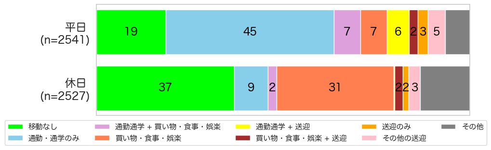
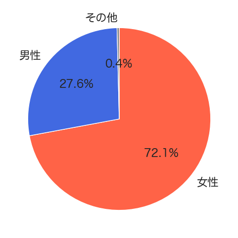

解説 12
図1は、子育て世帯の大人の1日の活動パターンです。 通勤・通学と送迎を平日に行う人が6%、買い物・食事・娯楽と送迎を平日に行う人が2%、送迎のみのトリップが3%、その他の活動パターン中に送迎行動を行う人が5%存在し、 平日1日のうちに何らかの送迎トリップを行う人が23%に達します。 また、送迎トリップの担い手は、72.1%が女性、27.6%が男性で、女性に送迎の負担が偏っていると言えます。

図1：子育て家庭の大人の1日の活動パターン

図2：送迎トリップの男女比